건강 앱의 러닝과 라이딩
어떤 앱으로 기록한 유산소 운동이든 경로 지도, 페이스, 심박 구간과 함께 표시됩니다.
iPhone & Apple Watch를 위한 근력 운동
모든 세트를 몇 초 만에 기록하고, 모든 신기록을 확인하고, 한 주 계획은 AI 코치에게 맡기세요. Replex는 운동을 눈에 보이는 성장으로 바꿔 줍니다.
무료로 시작하세요. Pro는 AI 코치, 나만의 플랜, 전체 기록을 더해 줍니다.
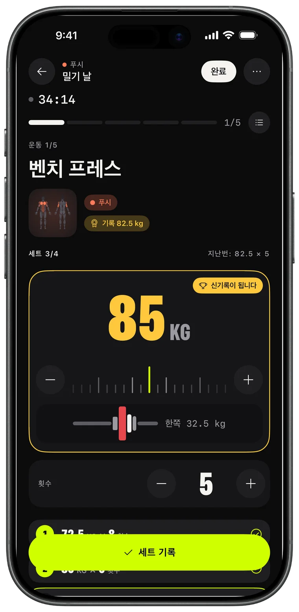
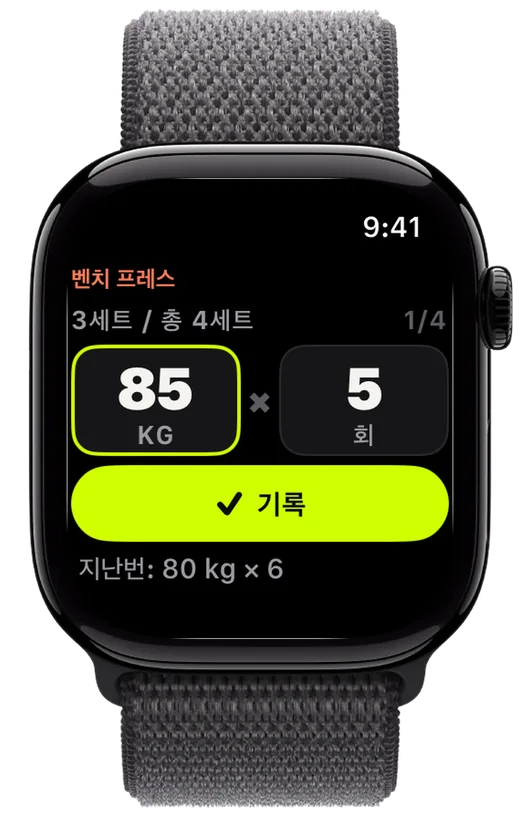
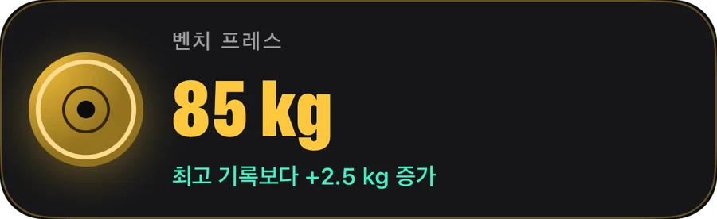
기록
원판을 맞추고, 세트를 기록하고, 지난번을 넘어서세요. Replex는 들었던 무게를 기억하고 다음 세트를 미리 준비해 둡니다.
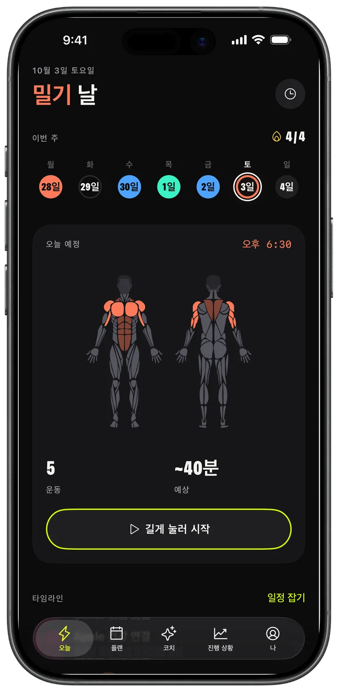
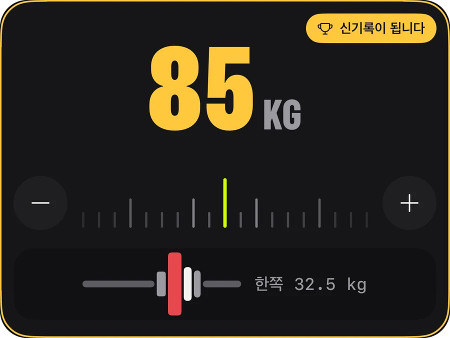
Apple Watch
iPhone은 가방에 두세요. Digital Crown을 돌려 무게와 횟수를 맞추고 ‘기록’을 탭하면 iPhone에도 실시간으로 동기화됩니다.
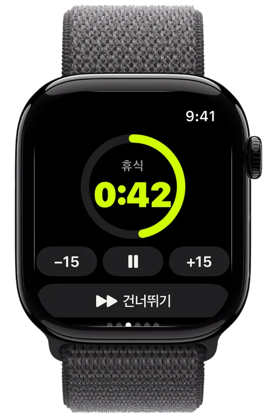
진행 상황
매주 오르는 볼륨, 내가 세운 모든 신기록, 운동별 추세까지. 노력이 결실을 맺고 있다는 걸 확인하세요.
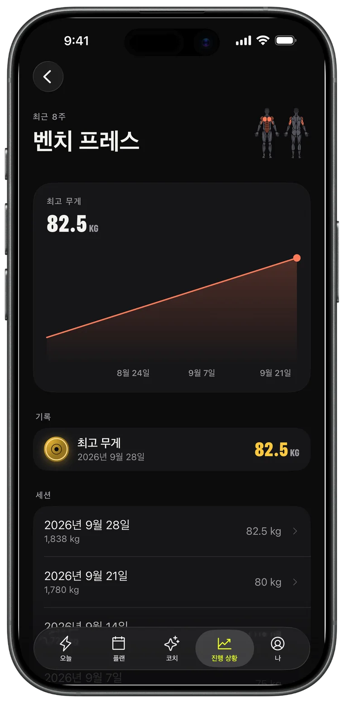
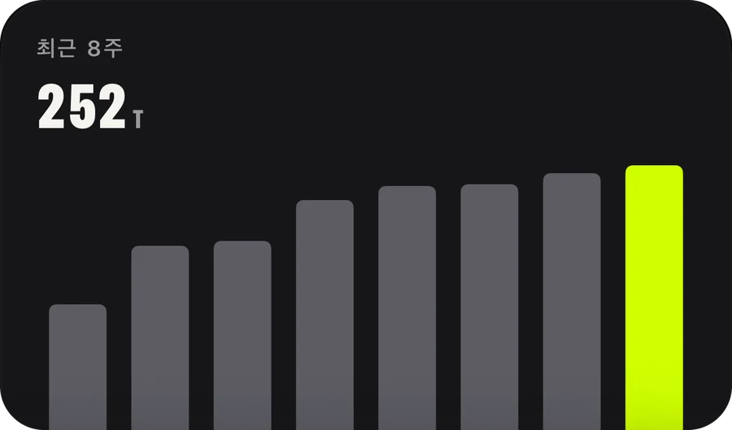
AI 코치 · Pro
한 주를 부탁하면 캘린더에 바로 들어갑니다. 코치는 세션, 신기록, 러닝 등 실제 운동 기록을 읽고 그에 맞춰 계획합니다.
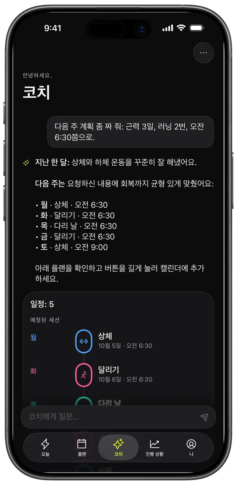
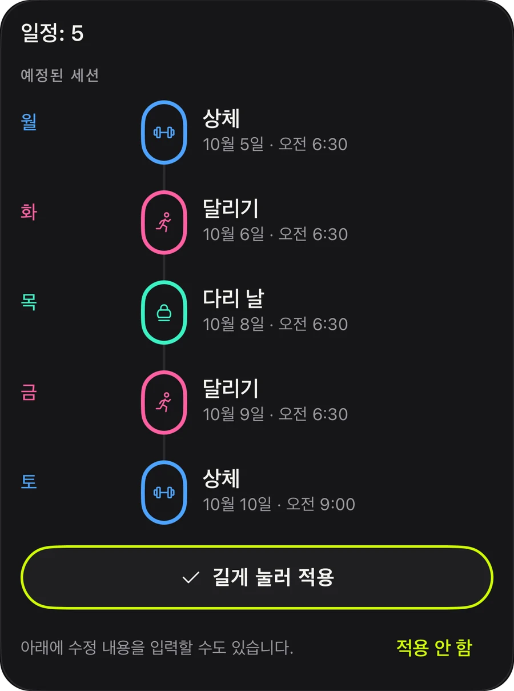
플랜
밀기, 당기기, 하체, 상체/하체, 전신. 오늘 바로 시작할 수 있는 44개의 준비된 플랜을 고르거나, 직접 만들어 반복하세요.
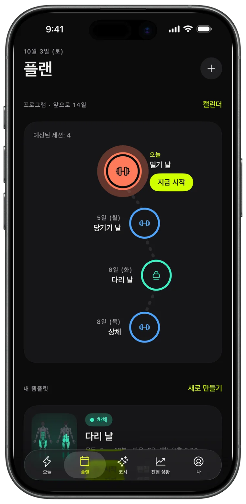
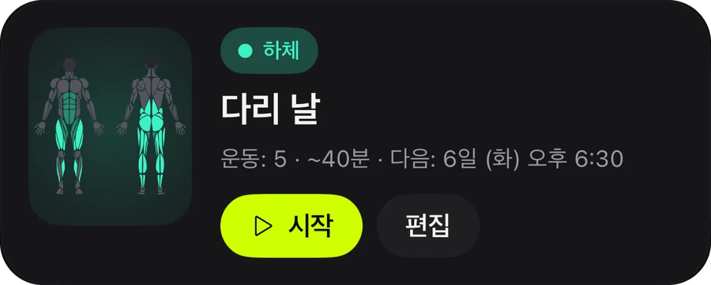
공유
끝낸 운동은 모두 볼륨, 시간, 신기록이 담긴 스토리 카드가 됩니다. 올려도 좋고, 증거로 간직해도 좋습니다.
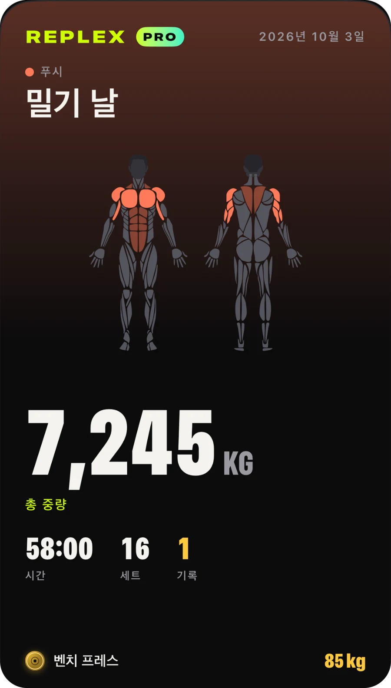
어떤 앱으로 기록한 유산소 운동이든 경로 지도, 페이스, 심박 구간과 함께 표시됩니다.
세트, 휴식, 심박수를 잠금 화면과 Dynamic Island에서 확인하세요.
운동, 템플릿, 플랜을 모든 기기에서. 나만 볼 수 있습니다.
시작하기 전에 이번 세션이 단련할 부위를, 그리고 이번 주에 운동한 부위를 확인하세요.
킬로그램, 파운드, 스톤 지원. 맨몸 운동과 시간 기반 운동도 기본 제공.
라이트 또는 다크, 그리고 Volt, 블루, 핑크 세 가지 강조 색상과 어울리는 앱 아이콘.
기록하고 성장하는 데 필요한 모든 것.
미리 계획하는 사람을 위해.
Pro는 앱에서 월간, 연간 또는 한 번 결제로 평생 이용하는 방식으로 구입할 수 있습니다. 구독은 Apple 계정에서 언제든지 취소할 수 있습니다.
Replex를 다운로드하고 1분 안에 첫 운동을 기록하세요.
아니요. Replex는 iPhone만으로 모든 기능을 쓸 수 있습니다. Apple Watch가 있으면 손목에서 세트를 기록하고, 휴식 타이머를 쓰고, 심박수를 측정할 수 있습니다.
네. 기록, 휴식 타이머, 맨몸 플랜 5개, 최근 세션의 신기록, Apple Watch 운동 5회를 무료로 쓸 수 있습니다. Replex Pro(월간, 연간 또는 한 번 결제하는 평생 이용권)는 AI 코치, 플랜 44개 전부, 나만의 템플릿과 일정, 전체 기록, 무제한 Watch 운동을 더해 줍니다.
내 기기와 나만의 iCloud에 저장됩니다. 운동은 건강 앱에도 저장할 수 있습니다. AI 코치는 내가 물어볼 때만, 답하는 데 필요한 정보만 봅니다.
네. 킬로그램, 파운드, 스톤 중에서 고를 수 있고, 원판 계산기도 선택한 단위를 따릅니다.
한국어, 영어, 스페인어, 포르투갈어, 프랑스어, 독일어, 일본어, 중국어, 아랍어, 히브리어 등 54개 언어를 지원합니다.